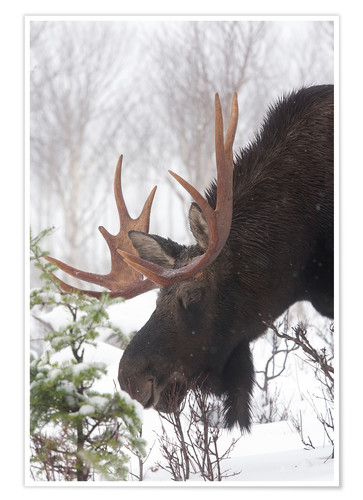
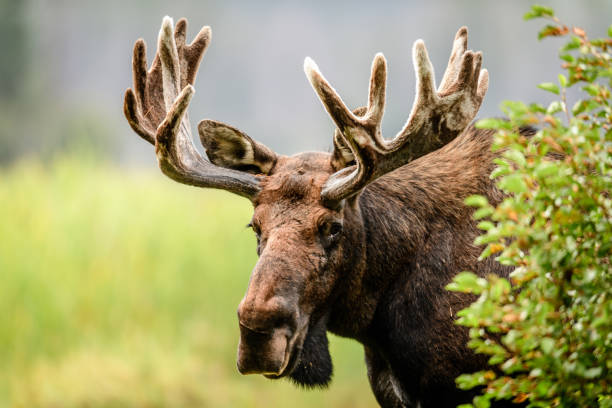

Wildlife
Die Tiere der WildnissElche gehören zu den Hirschen und sind die größte Hirschart der Welt. Sie erreichen eine Größe von 2,3 m (Schulterhöhe). Elche leben in kälteren Regionen in Nordeuropa, Nordasien und Nordamerika. Sie sind Einzelgänger, die sowohl tagsüber als nachts aktiv sind.
Fun Fact: Elche tragen eine Art Bart, dieser hat ähnlichkeit mit dem einer Ziege. Ausserdem sind diese Zufälligerweise auch noch gleich lang.
Als Bewohner des nördlichen borealen Waldes und der Taigagebiete kommt der Elch in Europa, Asien und Nordamerika vor. Besiedelt werden in Asien unter anderem die Mongolei und die Mandschurei. Er fehlt auf Sachalin und auf den Kurilen, ansonsten stellt der Pazifik die Ostgrenze des asiatischen Verbreitungsgebietes dar.
In Nordamerika kommt der Elch vor allem in Kanada vor, im zentralen und westlichen Alaska, in großen Teilen von Neuengland und New York, in den oberen Rocky Mountains, Nordost-Minnesota, Michigan auf der Oberen Halbinsel und der Isle Royale im Lake Superior.
“Elche haben eine stark unterschiedliche Art zu kommunizieren. Es reicht von Fiepen bis hin zu Gebrüll, dass einem Löwen ähnelt”
- Typ: Säugetier
- Durschnittsalter: 20 Jahre
- Gewicht Masculin: 500kg
- Gewicht Feminin: 350kg
- Familie: Hirsche
Elche gehören zu den Hirschen und sind die größte Hirschart der Welt. Sie sind Einzelgänger, die sowohl tagsüber als nachts aktiv sind. Die männlichen Tiere tragen ein auffälliges Geweih, das eine Spannweite von bis zu 2 m haben kann. Welches sie nutzen um andere Männchen einzuschüchtern und weibliche Elche zu beeindrucken.